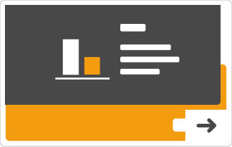

Asyl in Zahlen{{minValue[0]}}
Die Flüchtlingssituation in Deutschland und weltweit geht uns alle etwas an. Aber auch wenn sich viele schon engagieren kennen wenige die wirklichen Zahlen und Fakten dahinter. In dieser interaktiven Infografik könnt ihr euer Wissen zu diesem Thema testen.

Bewege deinen cursor im Browserfenster auf und ab um um deinen Antwort festzulegen.

Durch klicken bestätigst du deine Antwort und kriegst die Lösung im Vergleich zu deinem Tipp dargestellt.

Mit dem Pfeil Button unten rechts in der Ecke geht es zur nächsten Frage.